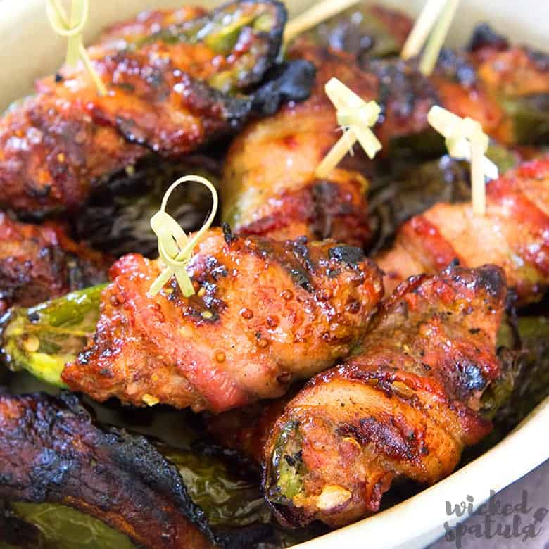

Grilled Jalapeno Poppers

Prep
Preperation Time: 30 minutes
Cook Time: 30 minutes
Total: 60 minutes
Servings: 16
Ingredients
- 8 ounces cream cheese
- 2 tablespoons grated Parmesan cheese
- 1 1/2 teaspoons garlic powder
- 1 1/2 cups shredded Cheddar cheese
- 16 whole jalapeno peppers with stems
- 8 slices bacon, cut in half crosswise
Directions
- Preheat an outdoor grill for medium heat, and lightly oil the grate.
- Mix together the cream cheese, Parmesan cheese, garlic powder, and Cheddar cheese
in a bowl until the mixture is thoroughly blended.
- Lay a jalapeno pepper onto a work surface, and cut a lengthwise sliver from
the side of the pepper, exposing the seeds and white membrane. With the handle
of a teaspoon, scrape out the seeds and membrane, leaving the hollow pepper.
Repeat for the rest of the peppers. Chop up the pepper slices, and mix into the
cheese stuffing. Stuff each pepper with cheese mixture, and wrap each stuffed
pepper in a half bacon slice. Secure with toothpicks.
- Grill the poppers on a less-hot part of the grill until the peppers are hot
and juicy and the bacon is browned, 30 to 40 minutes.